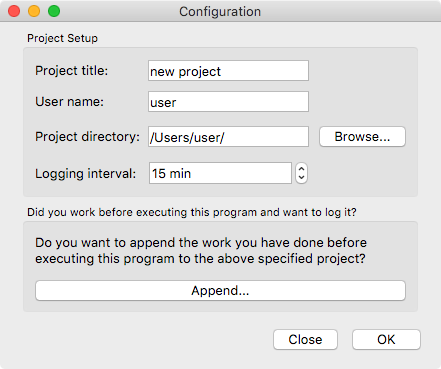
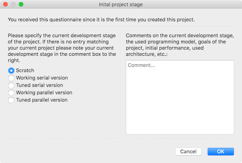
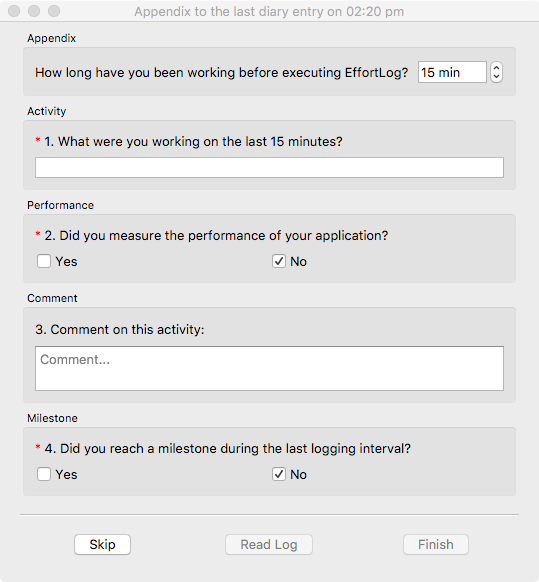

The configuration dialog consists of one unified window which provides acces to all user-input needed. The dialog consists of a vertical list of entries. Each of these entries is divided into a label explaining the expected input, a filed for the input and optional a button for easier access to the expected input. The user can browse through the input fields by hitting "tab" on the keyboard.
In the lower area of the dialog are two buttons. The button labeled "Close" will close the configuration dialog and exit the main program. To the right of it is a button labeled "OK". This button will be enable if the user input is valid for all required fields of input. This button will close the configuration dialog and raise the focus on the main program. Additionally, the main program will start the timer for logging events with the user-specified interval. The status of the main program will therefore be "running".
The main window is divided into four distinct areas which will be explained in detail in the folling section.

Project setup
This part of the dialog lets the user specify the user name and project title. Both of these inputs are expected to be any string of characters. None of these fields can be empty on executing the main program.
Logging setup
This part of the dialog lets the user specify general information about the planned logging. The program will write to a log file in JSON-format. The first input is the location of this file. This defaults to the directory where the executable of the program is stored. The second input is the log file's name. This defaults to the project's title with the ending ".json". The logging interval is an integer number between 1 and 180. None of these fields can be empty on executing the main program.
Development stage of the project
This part of the dialog lets the user specify the current development stage of the program. The choices of the stage include:
Scratch
Working serial version
Tuned serial version
Working parallel version
Tuned parallel version
The default value is "Scratch".

Appendix
This part of the dialog lets the user append to the current log file. This is helpful if the user has worked on a project before executing the program. The Button "Append..." opens the general questionnaire and lets the user specify the logging event. In contrary to the interval-based questionnaires, the appending questionnaire lets the user specify the duration of the current event in minutes.

Encryption
EffortLog encrypts all user related files to ensure the safety and privacy of its users. All project files and log files are encrypted with a strong 256-bit AES encryption. The user sets a password for each project on project-setup. To manually encrypt the log files a current version of OpenSSL (https://www.openssl.org) is required. Encryption can be done via command-line with the following command:
openssl enc -aes-256-cbc -d -in .json -out encrypted_file
Note: Choosing a complex and unique password for each project is crucial to ensure privacy!
Note: As of January 2016, changing passwords for a project is not possible once the password is set.
If the user specifies a new project a dialog will pop up which lets the user specify a password for this project. This password is then used to encrypt all log files.
If the user specifies an existing project a dialog will pop up which asks the user for the password of given project. This password is then used to decrypt the project and log file to read in all data. After exiting the program this password is used to encrypt both files before writing them to disk.